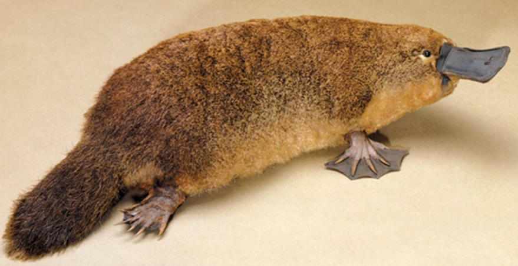

senão leu a mensagem da outra pagina não vai entender
Incrivel esse ornitorrinco não é mesmo?
sobre o onittorinco
O ornitorrinco é um mamífero semiaquático natural da Austrália e Tasmânia. É o único representante vivo da família Ornithorhynchidae, e a única espécie do gênero Ornithorhynchus. Juntamente com as equidnas,formam o grupo dos monotremados, os únicos mamíferos ovíparos existentes.